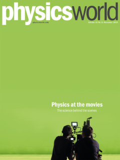

Physics World November 2019 cover
It’s not often that film stars appear in science magazines. But in the November special issue of Physics World on physics and the movies, Harry Potter star Daniel Radcliffe talks to friend and physicist Jess Wade about what it’s like as an actor to work with visual effects (VFX), from 3D body mapping to green screens and tennis balls.
Elsewhere in the special issue, which is out now in print and digital format, find out how movie-makers rely on software and simulations from scientific research, explore what it’s like to be a Hollywood science consultant, and cringe at some of the classic science movie bloopers.
There’s also an exclusive interview with Douglas Trumbull – the legendary VFX pioneer who worked on 2001: A Space Odyssey – while Benedict Cumberbatch, who once starred as Stephen Hawking, explains the challenges of portraying scientists in film.
Plus there’s our usual mix of news, opinion, reviews and careers, and a movie-themed Lateral Thoughts illustration by Eugenia Viti and Ivan Viti.
Remember that if you’re a member of the Institute of Physics, you can read the whole of Physics World magazine every month via our digital apps for iOS, Android and Web browsers. Let us know what you think about the issue on Twitter, Facebook or by e-mailing us at pwld@ioppublishing.org.